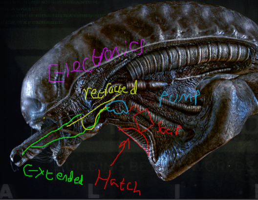
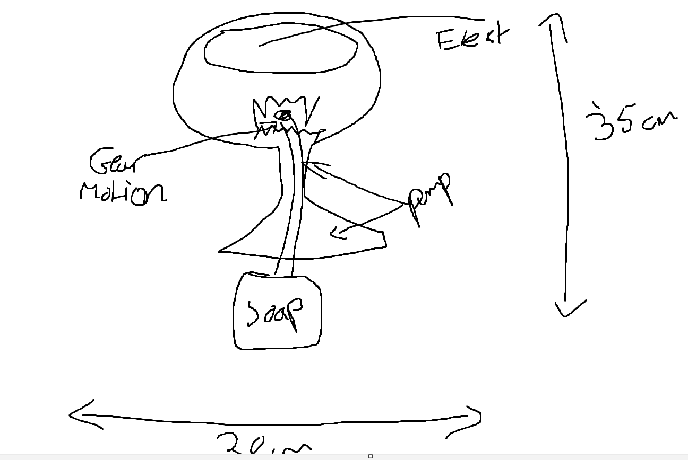
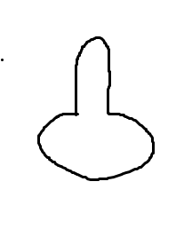
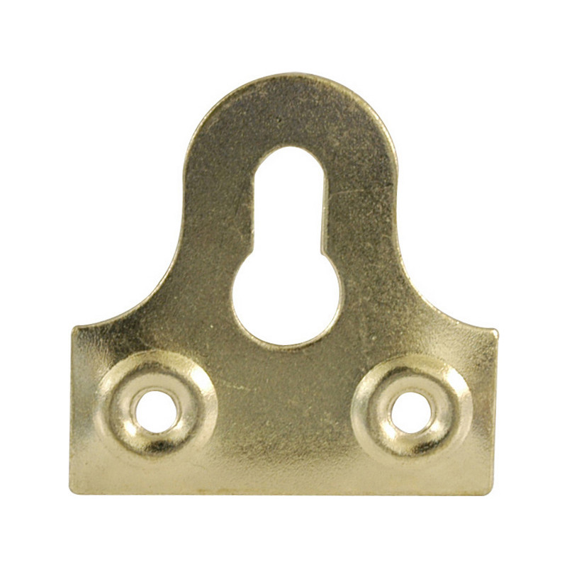

Initial Concept
When the task was presented to the group, multiple ideas were brainstormed. This includes:
• Windmill
• Drone
• Band
• Octopus
• Butterfly
• Dinosaur
• Xenomorph from alien
From this point it was very quickly decided that the focus was directed at the Xenomorph from
the Alien films. Given the shape of the tongue the group decided it would be interesting to create
a soap dispenser, with the tongue dispensing the soap. As can be seen below, original ideas had a
retractable tongue, electronics stored in the top parts of its head and a pump in order to pump soap
from where it was stored. To resolve potential copyright problems, the name of the artefact was labelled
“Soapomorph”. (IMDb, 1979)


Also ideas of how it was going to mounted were discussed. Although not decided fully at this original stage, whether it was going to be mounted or put onto a base was considered. One of the original sketches for how it would be mounted can be seen below, this is a key hole moutning bracket (what they actually look like is also displayed).


Also part of the discussion was how the tongue would extend in order to dispense soap. The main concern was a safety issue as finger entrapent was a possibilty if the tongue retracted while the use still had their hand collecting soap. On top of this how the artefact was going to deteriorate over time needed to be considered for a number if reasons. To start, if specfic parts broken, like the track for the tongue it could risk injuring a user. But a second reason is, it would be more ideal for a company to only replace specific parts rather than a whole model in order for them to save money.